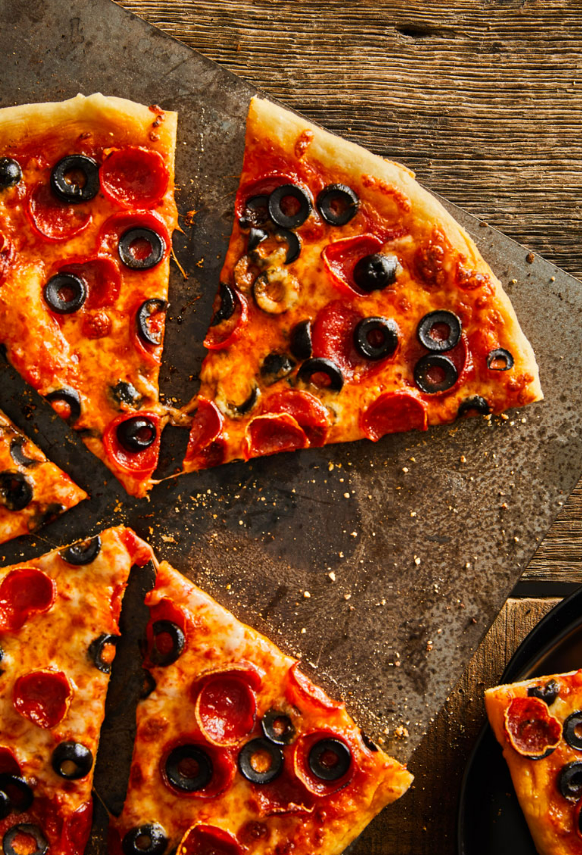

← Back to Dinners
Homemade Pizza
Notes
Homemade pizza from scratch dough!

8/10
Homemade Pizza
Ingredients:
Dough
Mozzarella
Tomatoes/Pasta Sauce
Black Olives
Pepperoni
Salt
Semolina Flour
Steps:
Semolina flour and salt on a tray with olive oil
Knead dough into a circle of desired size
Put sauce, mozzarella, pepperoni, and black olives on top
Cook pizza in oven at 400F for 20 minutes